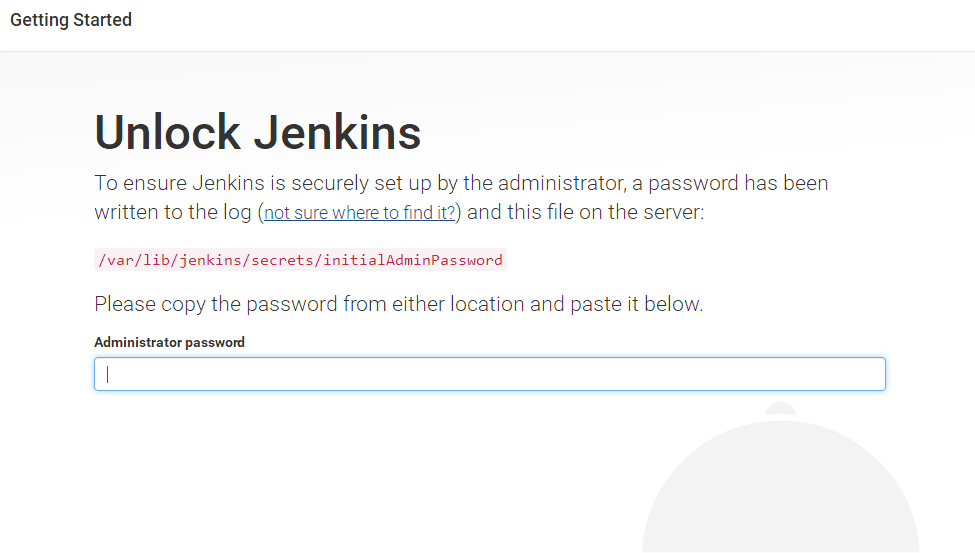
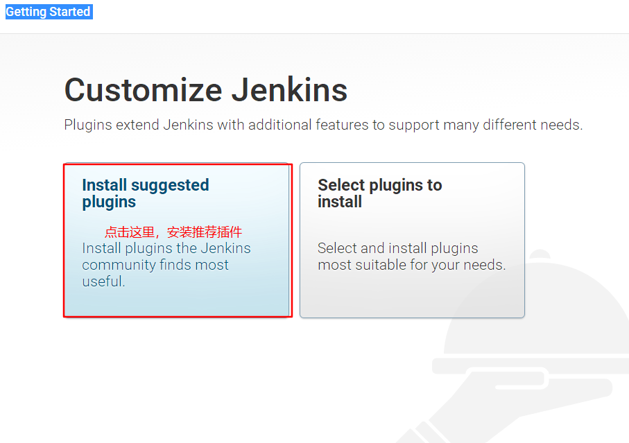
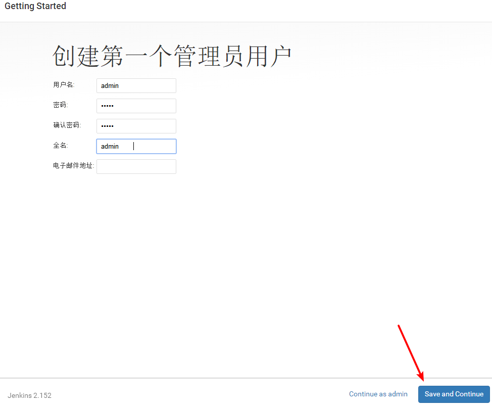

Jenkins学习笔记
Jenkins介绍
Jenkins是一个开源持续集成工具
开发工具：java（依赖java环境运行）
功能：提供了软件开发的持续集成服务
特点：支持主流软件配置管理，配合实现软件配置管理、持续集成功能
Jenkins优势和应用场景
主流的运维开发平台，兼容所有主流开发环境
插件市场可与海量业内主流开发工具实现集成
job为配置单位与日志管理功能，使运维和开发协同工作
权限管理划分不同job不同角色
强大的负载均衡功能，保证项目的可靠性
Jenkins安装和管理
#wget -O /etc/yum.repos.d/jenkins.repo http://pkg.jenkins-ci.org/redhat/jenkins.repo
#rpm --import https://jenkins-ci.org/redhat/jenkins-ci.org.key
确认java环境为8.0或者8.0版本以上，若无则使用：yum -y install java
#useradd jenkins
#yum -y install jenkins
更多安装方式，需要看官网，建议采用war包方式安装：
https://jenkins.io/doc/book/installing/
更改Jenkins用户启动和端口
#vim /etc/sysconfig/jenkins
JENKINS_USER="jenkins"
JENKINS_PORT="8080"
#chown -R jenkins:jenkins /var/lib/jenkins/
#chown -R jenkins:jenkins /var/lib/jenkins/
备注：若是不使用jenkins用户来运行。这些是必须修改的
启动：#systemctl start jenkins
web浏览：http://192.168.72.132:8080/
初始化
图中很明显说明，使用cat /var/lib/jenkins/secrets/initialAdminPassword 输入密钥之后才能下一步：


注意，下图邮箱也需要填写的

然后一直下一步就ok了